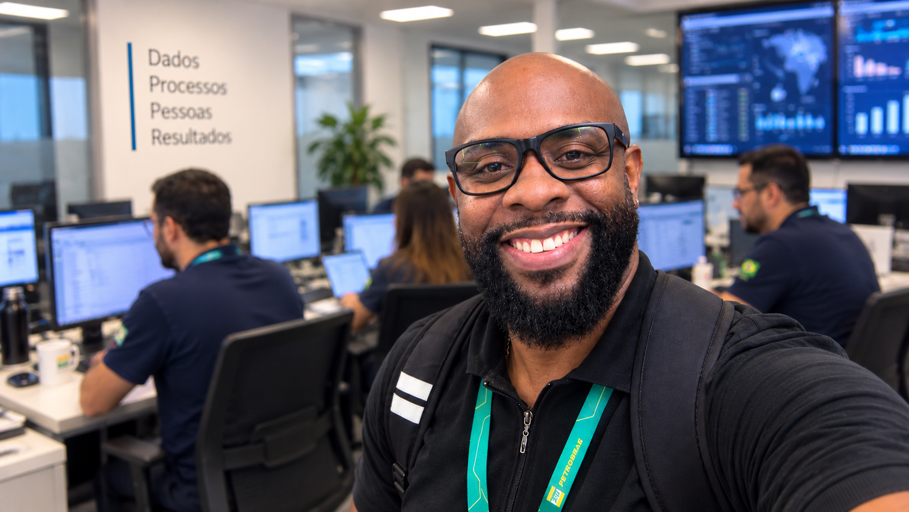
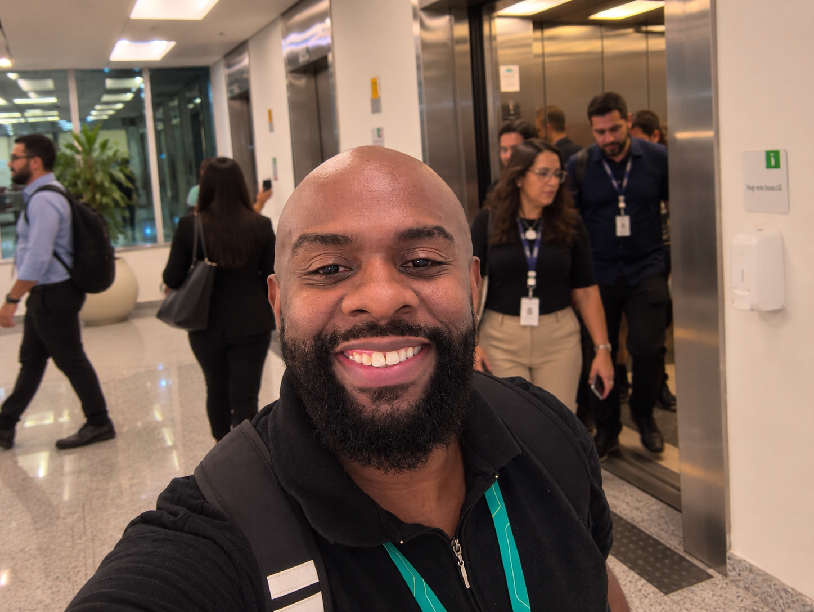

BUSINESS INTELLIGENCE / POWER BI
PAINÉIS DE DADOS
ANÁLISE DE DADOS · POWER BI
Painéis de Dados
Meu Corpo em Dados e Atlas Global, com prévias interativas e evolução contínua.
Explorar painéis de dados ↗PORTFÓLIO PROFISSIONAL
Sou Anderson Gomes. Uno análise de dados, automação e desenvolvimento de aplicações para criar experiências que simplificam o trabalho e transformam ideias em resultados.


Sou administrador, pós-graduado em Sistemas de Informação e em Gerenciamento de Projetos, e curso o 9º período de Engenharia de Produção. Atuo na interseção entre processos, dados e tecnologia, desenvolvendo soluções que tornam rotinas mais inteligentes, organizadas e acessíveis.
Este espaço reúne projetos, experimentos e aplicações desenvolvidos com foco em usabilidade, eficiência e transformação digital.
Competências: SQL, Python, Power BI, Power Apps, Power Automate, análise e integração de dados, desenvolvimento de aplicações e melhoria de processos.
Entre pessoas, tecnologia e processos: um pouco do universo que inspira os projetos apresentados aqui. Imagens de ambientação criadas a partir de fotografias pessoais.


Sou casado com Renata Santos Oliveira Gomes e pai de Luiz Felippe Santos Pereira e Maria Luiza Oliveira Gomes. Minha família é minha base, minha motivação e parte essencial de tudo o que construo, dentro e fora da tecnologia.

Uma conquista pessoal e acadêmica que faz parte da minha formação e da maneira como enxergo pessoas, gestão e processos.


Projetos organizados pelo tipo de solução, e não por uma única linguagem de programação.
Meu Corpo em Dados e Atlas Global, com prévias interativas e evolução contínua.
Explorar painéis de dados ↗Três projetos com objetivos diferentes: comunicação privada, acompanhamento físico e organização de pedidos. Tecnologias distintas, reunidas pela finalidade de cada solução.
Conhecer as aplicações ↗Automação de elementos PEP em requisições, consulta integrada de materiais/NM e qualidade de dados em simulações interativas.
Experimentar automações Python ↗Experiência interativa de disponibilidade e validação gerencial em Power Apps, além de simuladores de fluxos Power Automate.
Experimentar Power Apps e Automate ↗Explore painéis, aplicações e um laboratório interativo com Python, Power Automate, Power Apps, assistente operacional e SQL Analytics. Todas as simulações usam dados fictícios.
O Analista Invisível é uma página criada por Anderson Gomes para compartilhar dicas práticas, tutoriais e conteúdos sobre SQL, Python, Power BI, Power Apps, Power Automate e outras ferramentas digitais.
Com André, personagem da página, e seu inseparável castor 🦫, situações reais do universo dos analistas se transformam em conhecimento acessível, criatividade e bom humor.
Conhecer no Instagram ↗Projetos, oportunidades e conversas sobre tecnologia e transformação digital.
Dados, automação e soluções digitais.